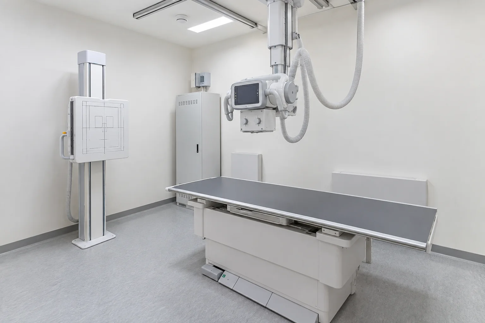
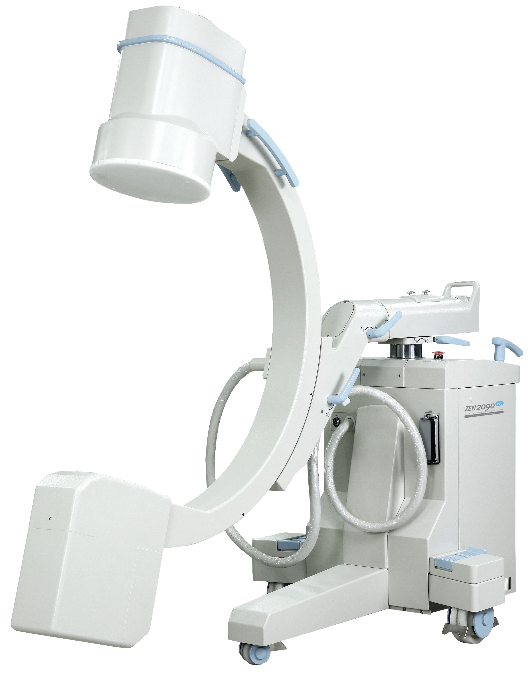
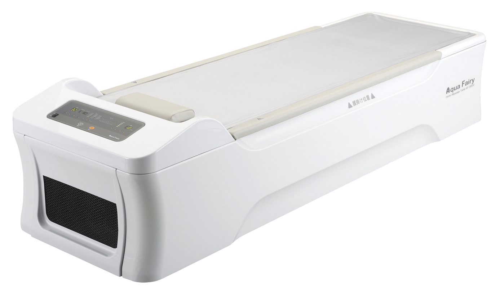
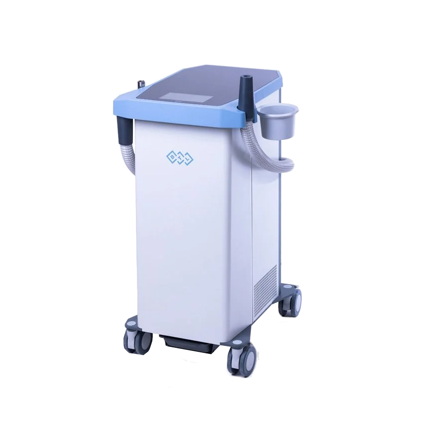
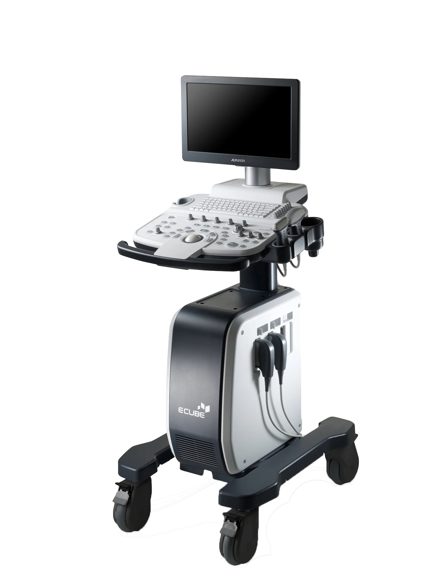

MEDICAL EQUIPMENT
철저히 검증된 검사·치료 장비
철저히 검증된 검사·치료 장비만 사용하여 아픔의 원인을 빠르고 정확하게 찾겠습니다.

Digital X-ray
디지털 X-ray
통증의 시작점을 가장 빠르고 선명하게 탐지합니다- 뼈와 관절 정밀 촬영으로 정밀한 1차 진단 수행
- 저선량 고화질 촬영 기술로 안전하고 신속한 검사

C-ARM Video Device
C-ARM 실시간 영상장치
영상으로 직접 보며 진행하는 오차 없는 맞춤 시술- 병변 위치를 실시간 영상으로 확인하며 주사 치료 진행
- 시술 정확도를 끌어올려 정상 조직 손상 방지

Ultrasound Equipment
근골격 초음파 진단기
엑스레이에 잡히지 않는 미세 인대·근육 손상까지- 통증이 일어나는 관절과 연부조직을 실시간 정밀 투영
- 검사부터 원인 설명까지 원스톱으로 이어지는 진단
장비사진
04
Foot Pressure Meter
족압 측정기
무너진 발의 균형이 몸 전체의 통증을 만듭니다- 걸음걸이와 족압 분포 데이터를 통한 불균형 진단
- 개인별 무게중심을 잡아주는 교정 인솔 제작 지원
장비사진
05
Percussion Hammer
근육타진기(싸소)
굳고 뭉친 심부 근육을 신속하게 뚫어줍니다- 근육 피로를 풀고 혈류를 촉진하여 빠른 통증 완화 지원
장비사진
06
Shoulder and Knee CPM
어깨·무릎 CPM 장비
수술 후 관절의 부드러운 움직임을 되찾아주는 자동 재활 지원- 통증 없이 안전하게 관절 가동 범위를 단계별로 확대

Traction Therapy
견인치료기
눌린 척추 관절을 당겨 신경 압박을 낮춰주는 감압 케어- 디스크·협착증으로 인한 뻐근함과 통증을 비수술로 경감

Cryotherapy Unit
극저온치료기
급성 통증과 부종을 차갑고 완벽하게 진정시키는 냉각 케어- 염증을 빠르게 가라앉혀 수술 후 재활 속도를 상승
장비사진
09
Interferential Current Therapy
간섭파치료기
깊은 통증 부위까지 교차 자극으로 침투하는 자극 치료- 심부 근육과 신경을 풀어주어 찌릿한 만성 통증을 케어
장비사진
10
Infrared Therapy
적외선 치료기
따뜻한 온열 에너지를 깊숙이 전달하는 순환 케어- 굳어진 관절과 근육을 부드럽게 이완시키고 혈류 개선

Ultrasound Therapy
디지털 초음파 치료기
미세 진동으로 손상된 조직을 깊은 곳부터 재활- 붓기와 염증을 완화하고 세포의 자연 회복을 가속화
Magnetic Field Therapy
자기장 치료기
강력한 자기장으로 세포 단위의 재생을 끌어올리는 기술- 번거로운 환복 없이도 편안하게 받는 만성 척추·관절 통증 치료
장비사진
13
Zimmer Biomet
Zimmer Biomet 장비
치료 효율을 극대화하는 하이엔드 원심분리 시스템- 자가 혈소판 및 성장인자를 고농도로 추출하여 조직 재생 가속